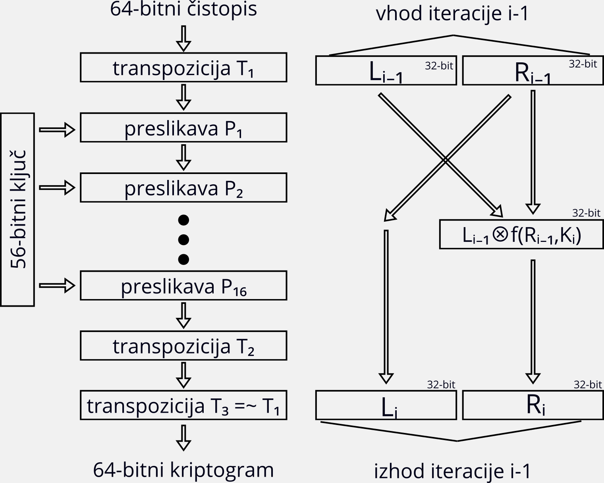
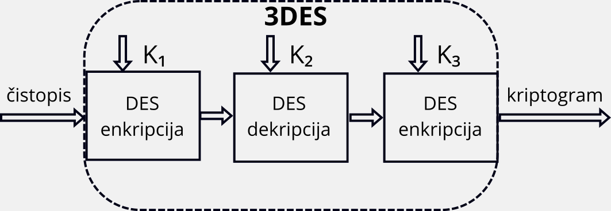
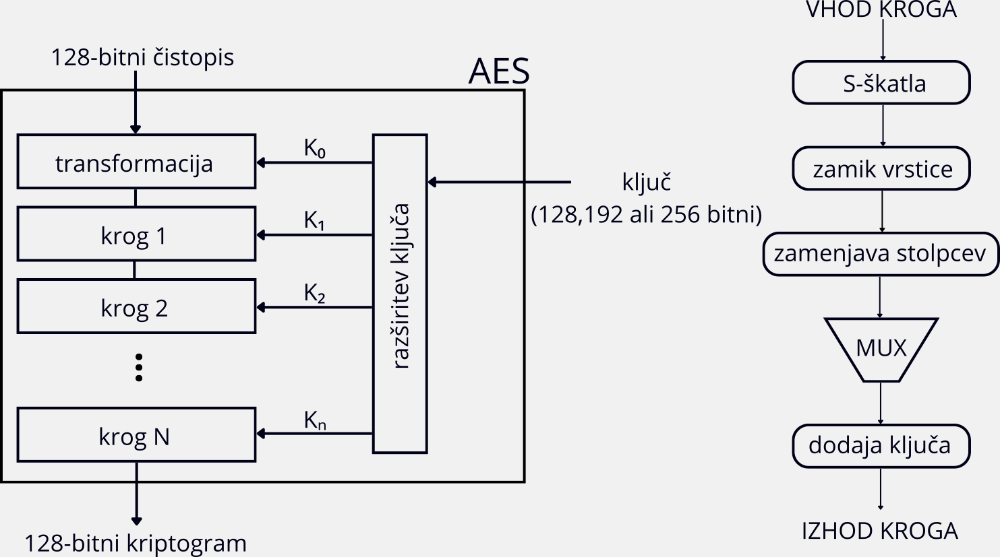
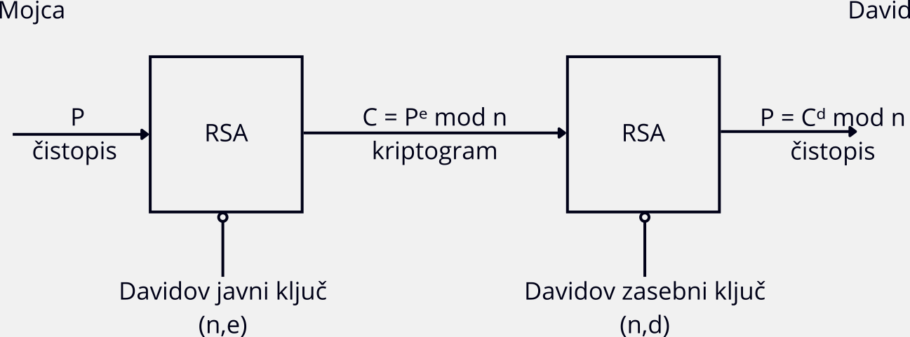
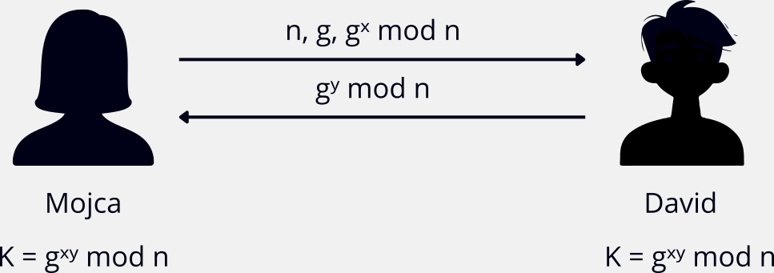
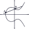

Sodobne tehnike šifriranja so veliko bolj kompleksne in varne kot klasične metode. Temeljijo na kompleksnih
matematičnih algoritmih, kar omogoča visoko raven varnosti v digitalnem okolju. Njihova uporaba je ključna na številnih
področjih, kot so varovanje osebnih podatkov, spletno bančništvo, elektronski podpisi in na številnih drugih varnostno občutljivih področjih.
(Sidhu, 2023)
Kriptografske algoritme danes delimo na dve glavni skupini:
(Sidhu, 2023)
DES je kriptografski algoritem, ki ga je ameriška vlada v 70. letih prejšnjega stoletja sprejela kot uradni standard za šifriranje
podatkov. Temelji na bločnem šifriranju, kar pomeni, da vhodne podatke razdeli na zaporedne bloke določene
dolžine, vsak blok posebej šifrira, nato pa nadaljuje z naslednjim.
(Sidhu, 2023)
Des deluje na blokih dolžine 64 bitov in za šifriranje uporablja 56 bitni ključ.
Med šifriranjem DES uporablja kombinacijo substitucije in transpozicije. Postopek vključuje več krogov, kjer se v
vsakem uporablja drugačen podključ, ki ga iz izvirnega ključa generira poseben algoritem.
(Sidhu, 2023)

Glavna slabost DES algoritma je prekratka dolžina ključa, saj je mogoče algoritem ob uporabi sodobne računalniške moči
razbiti z napadom z brutalno silo, kjer napadalec preizkusi vse možne ključe. Zato je bila razvita izboljšana različica DES-a:
3DES (Triple DES).
(Sidhu, 2023)
Čeprav se DES danes večinoma ne uporablja več v novih sistemih zaradi varnostnih omejitev, ga še vedno lahko najdemo v določenih starejših sistemih.
DES je zgodovinsko izjemno pomemben, saj je postavil temelje za razvoj sodobnih kriptografskih algoritmov, kot je AES.
(Sidhu, 2023)
3DES ali trojni DES je razširjena različica algoritma DES, pri katerem se postopek šifriranja izvede trikrat zapored, običajno s tremi različnimi ključi - K₁, K₂, K₃, katerih skupna dolžina je 168 bitov. Algoritem deluje na 64-bitnih blokih podatkov, enako kot klasični DES. (Sidhu, 2023)

Ker postopek šifriranja izvaja DES trikrat, je 3DES bistveno varnejši od enkratnega DES, saj poveča odpornost proti napadom z brutalno silo. Njegova slabost je ta, da je počasen, zlasti v primerjavi z novejšimi algoritmi, kot je AES. (Sidhu, 2023)
AES je bil razvit kot izboljšava algoritmov DES in 3DES, saj sta oba postala ranljiva zaradi prekratkih ključev in napredka v računalniški moči.
Algoritem je bil konec 90. let izbran kot novi šifrirni standard s strani ameriškega Nacionalnega inštituta za standarde (NIST).
(Sidhu, 2023)
AES deluje na 128-bitih blokih podatkov in omogoča ključe dolžine 128, 192 ali
256 bitov. V praksi se najpogosteje uporablja 128 ali 256 bitni ključ. Glede na dolžino ključa se izvede
10, 12 ali 14 šifrirnih krogov. AES v primerjavi z DES uporablja napredne šifrirne tehnike, kot so: zamikanje vrstic, zamenjava stolpcev,
substitucija bitov in izpeljava ključev.
(Sidhu, 2023)

AES omogoča visoko raven varnosti zaradi dolge dolžine ključa in hkrati zagotavlja hitro in učinkovito delovanje, zaradi česar je primeren za širok spekter aplikacij. Kljub visoki varnosti pa je lahko ranljiv za napade preko stranskih kanalov (side-channel attacks). Danes velja za enega najsodobnejših, najvarnejših in najpogosteje uporabljenih šifrirnih algoritmov. (Sidhu, 2023)
RSA je asimetrični kriptografski algoritem, ki so ga leta 1977 prvič predstavili Ron Rivest, Adi Shamir in Leonard Adleman.
Temlji na uporabi para ključev (javnega in zasebnega) ter težavnosti faktorizacije velikih praštevil.
(Sidhu, 2023)
Postopek generiranja ključev
Delovanje algoritma lahko povzamemo v naslednjih korakih:
(Sidhu, 2023)

RSA je izjemno varen in zelo razširjen algoritem, ki predstavlja enega od temeljev sodobne kriptografije. Njegova zanesljivost temelji
na težavnosti faktorizacije velikih števil, zaradi česar je primeren za zagotavljanje varnosti pri komunikaciji prek interneta,
digitalnem podpisovanju in zaščiti občutljivih podatkov.
Slabost RSA algoritma je njegova počasnost, saj zahteva zapletene matematične operacije z velikimi števili,
zato ni primeren za šifriranje večjih količin podatkov. Poleg tega obstaja teoretična nevarnost, da bi
kvantni računalniki v prihodnosti omogočili razbitje RSA šifriranja. Kljub temu tovrstni napadi danes še niso izvedljivi v praksi.
(Sidhu, 2023)
DHKE je kriptografski protokol, ki omogoča, da si dve osebi, denimo Mojca in David, preko nezavarovane povezave izmenjata skupni
skrivni ključ, ki ga nato uporabljata za šifriranje svoje komunikacije. Protokol temelji na matematičnih lastnostih praštevil in
modularne aritmetike.
(Sidhu, 2023; McDonald, n. d.)
Postopek se začne tako, da si Mojca izbere dve števili: veliko praštevilo n in število g, ki je primitivni koren števila n.
Ti dve števili nista skrivni in ju lahko pozna tudi morebitni napadalec. Nato si Mojca izbere še število x, ki ga skrbno varuje.
Na osnovi tega izračuna gˣ mod n in ga skupaj z n in g pošlje Davidu. David naredi enako:
izbere svoje skrivno število y, izračuna gʸ mod n in rezultat vrne Mojci. Vsak od njiju nato z uporabo svojega skrivnega števila in prejetega
javnega ključa izračuna skupni skrivni ključ.
(Sidhu, 2023; McDonald, n. d.)

Vendar pa protokol ni popolnoma varen. Ena izmed možnih slabosti protokola je napad z vmesnim členom (ang. man-in-the-middle), pri katerem napadalec prestreže in spremeni javne ključe, ki si jih izmenjata Mojca in David. Da bi zmanjšali to tveganje, se DHKE v praksi pogosto uporablja skupaj z drugimi kriptografskimi mehanizmi, kot so digitalni podpisi, ki pomagajo preveriti prisotnost javnih ključev. (Sidhu, 2023; McDonald, n. d.)
Z razvojem tehnologije in vse bolj sofisticiranimi kibernetskimi napadi se tudi področje kriptografije neprestano razvija. Napredni algoritmi nove generacije, kot sta kriptografija eliptičnih krivulj (ECC) in kvantna kriptografija, predstavljajo najnovejše pristope k zaščiti podatkov v digitalni dobi. (McDonald, n. d.)
ECC je tehnika šifriranja z javnim ključem, ki temelji na matematični teoriji eliptičnih krivulj. Omogoča visoko raven varnosti z uporabo krajših ključev v primerjavi s klasičnimi algoritmi, kot sta RSA ali Diffie-Hellman. Zaradi tega je ECC učinkovitejša, hitrejša in zahteva manj računalniških virov. (Sidhu, 2023; McDonald, n. d.)

Javni in zasebni ključi se generirajo na podlagi točk na eliptični krivulji. Zaradi krajših ključev se čas za šifriranje in dešifriranje zmanjša, kar omogoča hiter prenos večjih količin podatkov brez zmanjšanja varnosti. Ravno zaradi teh lastnosti je ta algoritem vse bolj priljubljen v mobilnih napravah in napravah interneta stvari (IoT). ECC uporabljajo tudi ameriška vlada, kriptovaluta Bitcoin in Applova storitev iMessage. Čeprav starejši algoritmi, kot je RSA, še vedno opravljajo svojo nalogo, ECC vse bolj prevzema vlogo sodobnega standarda za spletno varnost, še posebej ob prihajajoči nevarnosti kvantnega računalništva. (McDonald, n. d.)
Kvantna kriptografija temelji na fizikalnih zakonih kvantne mehanike in ne na klasičnih matematičnih problemih, kar ji daje povsem nov nivo varnosti. Ključna prednost te tehnologije je, da omogoča popolnoma varen prenos podatkov, saj vsak poskus prestrezanja komunikacije spremeni kvantno stanje, zaradi česar je prisluškovanje takoj zaznano. (McDonald, n. d.)
Čeprav je kvantna kriptografija še v zgodnji fazi razvoja, že danes predstavlja pomemben mejnik v kibernetski varnosti V prihodnosti, ko bodo kvantni računalniki sposobni razbiti obstoječe algoritme, bo njen pomen še toliko večji. (McDonald, n. d.)